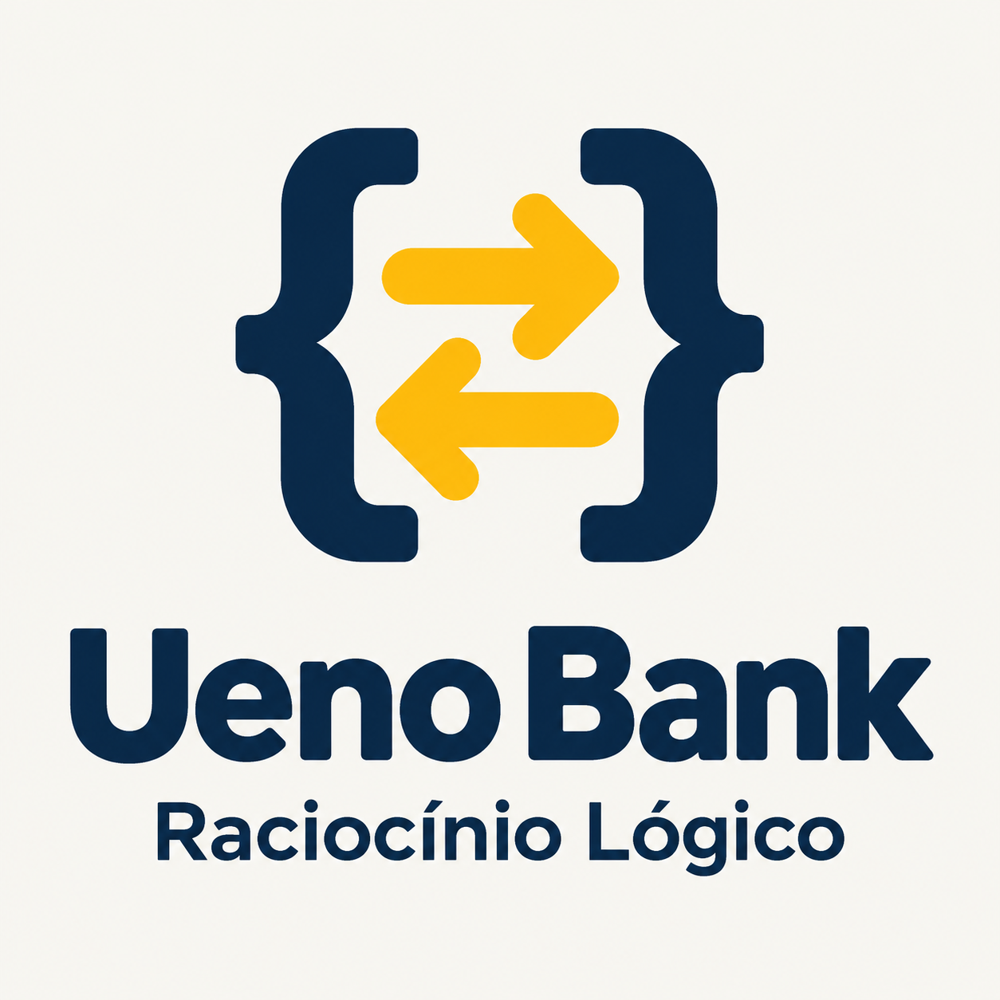

A
Alexandre
Organização da base, estrutura, Pix, revisão e integração.
Organização e coordenação
UENO BANKO Banco da Esperança · uma paródia acadêmica
Sistema Bancário em JavaScript — V1
Equipe: Alexandre, Felipe e Ribamar
Seus dados existem apenas enquanto o processo estiver aberto.
Paródia acadêmica — sem vínculo com instituição financeira real.
Apresentem o Ueno Bank como um banco fictício que promete confiança financeira com a esperança como garantia. Os dados existem somente durante a execução da simulação.
01 / O projeto
O banco é o cenário. O principal aprendizado foi construir junto, organizar mudanças e integrar o trabalho.
O banco é o cenário do trabalho. O principal aprendizado foi dividir tarefas, integrar o código e acompanhar as mudanças usando Git e GitHub.
02 / A equipe
Organização da base, estrutura, Pix, revisão e integração.
Organização e coordenaçãoLogin, menu, consulta de saldo e extrato.
Programador júniorValidação de valores, depósito e saque.
Programador júniorAlexandre organizou a estrutura e coordenou a integração. Felipe e Ribamar implementaram partes importantes do sistema como programadores juniores. A divisão ajudou cada um a trabalhar em tarefas claras e aprender com a revisão do restante da equipe.
03 / O fluxo
Cada etapa deixa o trabalho mais organizado e revisável.
A issue explica o que precisa ser feito; a branch dá um espaço de trabalho; os commits registram o progresso; e o Pull Request permite revisar antes de integrar.
04 / Organização no GitHub
Um exemplo real: o Pix saiu de uma tarefa registrada e chegou ao merge em master.
8-implementar-pix-entre-usuáriosO Pix atualiza os saldos e cria um único registro compartilhado; o PR #16 fecha a issue #8.
A issue #8 descreve o Pix entre usuários e seus critérios de aceite. A branch registrada no PR foi 8-implementar-pix-entre-usuários; nela, o commit fbd0344 registra a implementação. O PR #16 vinculou a entrega à issue com “Closes #8” e foi mesclado em master em 11 de novembro de 2026. O PR não tem revisão formal registrada, então apresentem a sequência como issue → branch → commit → merge.
05 / Revisão e conflitos
Um conflito aparece quando duas alterações não podem ser combinadas automaticamente.
Diagrama didático; não representa um conflito confirmado da equipe.
Um conflito não significa que o Git perdeu o projeto. Ele sinaliza que não consegue escolher sozinho entre duas versões. A equipe compara as mudanças, decide como combiná-las e confere o resultado. Só apresentem um caso como experiência da equipe se houver um exemplo real confirmado.
06 / Demonstração
Saldo após depositar R$ 100 e enviar R$ 20.
Extrato: Pix enviado — pelo menos chegou ao destino.
Saldo após receber o Pix durante a mesma execução.
Extrato: Pix recebido — aproveite antes que a diretoria descubra.
Vamos acompanhar o mesmo Pix pelos dois lados. Depois que Alexandre sai da conta, Felipe entra sem reiniciar o processo e vê o recebimento no extrato. Ao fechar e iniciar o sistema de novo, os dados são reiniciados porque não há persistência.
07 / Aprendizados
Git e GitHub não substituem a conversa da equipe. Eles dão estrutura para colaborar, mas é a comunicação que ajuda a entender mudanças, revisar com cuidado e decidir como integrar.
08 / Encerramento
Obrigado! E prometemos não fazer merge na conta errada.
A piada é sobre o banco fictício desta simulação acadêmica.
O banco pode até viver de saldo temporário, mas o aprendizado da equipe fica. Obrigado — e prometemos não fazer merge na conta errada.